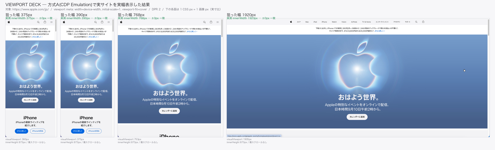
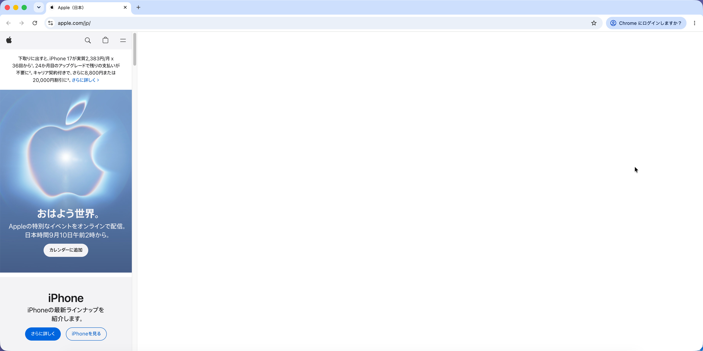
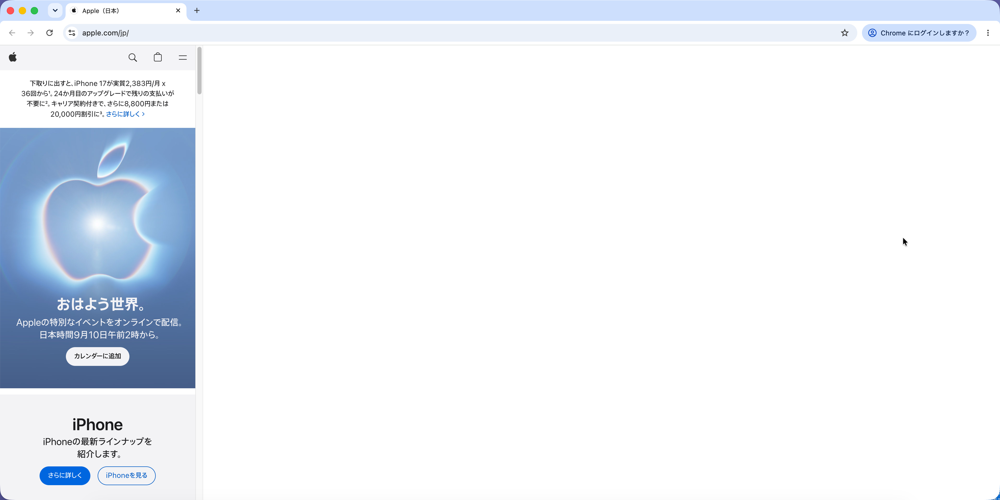
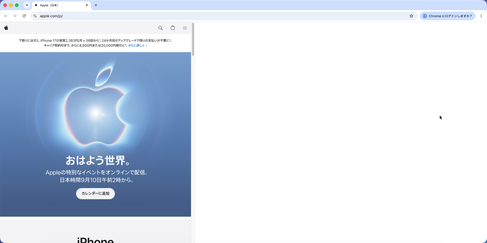
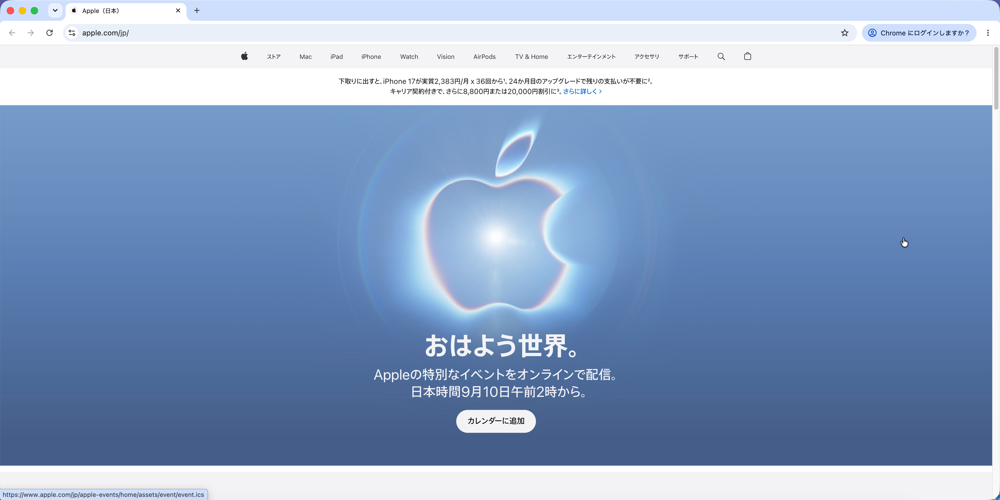
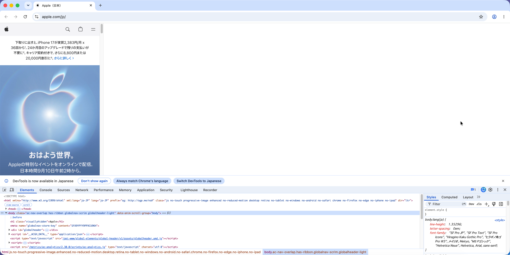
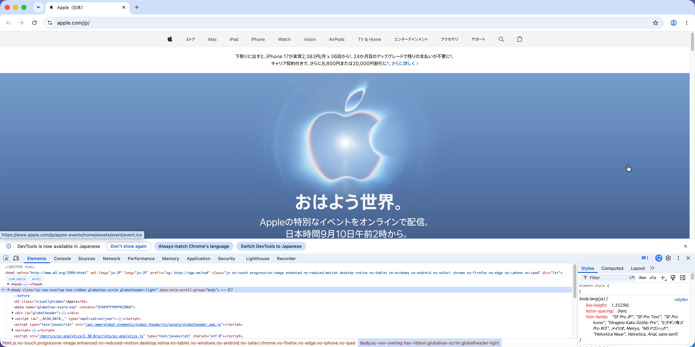

2026-08-30 実測。対象は実サイト https://www.apple.com/jp/（width=device-width, initial-scale=1, viewport-fit=cover）。
方式A（専用プロファイル + 直接 CDP Emulation.setDeviceMetricsOverride / width-only）で幅だけを指定し、
画面上に出ている状態をそのまま撮影した。縮小表示ではなく 1 CSS px = 実寸 で描かれている。
probe.html（viewport meta なし）で実測した。今回は
viewport meta を持つ実サイトで撮り直しており、POC_RESULT §9 の未検証項目 N-3 に対応する。| 狙った幅 | innerWidth | visualViewport | innerHeight | DPR | 横スクロール | 判定 | DevTools |
|---|---|---|---|---|---|---|---|
| 375px | 375px | 360px | 873px | 2 | なし | ±0 | — |
| 390px | 390px | 375px | 873px | 2 | なし | ±0 | — |
| 768px | 768px | 753px | 873px | 2 | なし | ±0 | — |
| 1920px | 1920px | 1905px | 873px | 2 | なし | ±0 | — |
| 390px | 390px | 375px | 573px | 2 | なし | ±0 | dock=bottom |
| 1920px | 1920px | 1905px | 573px | 2 | なし | ±0 | dock=bottom |
visualViewport が 15px 小さいのは縦スクロールバー分。innerWidth は全ケースで狙った幅と ±0px 一致した。
DevTools を下ドックで開くと縦が 873 → 573 CSS px に減るが、幅は 1920 でも切れない。

左から 375 / 390 / 768 / 1920px。並べた幅の比がそのまま実際の表示幅の比になっている。





